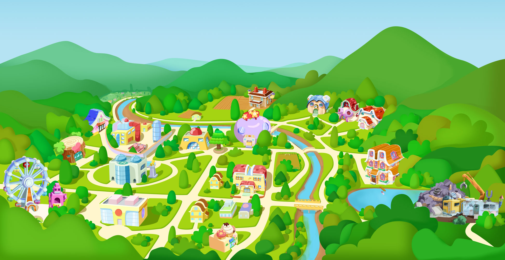

Welcome to dezico's town
Back
市政广场
市政广场坐落在妙妙镇的中心，据说妙妙镇第一任市长来自于猪迪克家族，并且他为妙妙镇的发展做出了杰出的贡献。为了纪念他的功绩，市政厅的建筑设计成了猪迪克家族的造型。现任市长是河马阿康，虽然看起来有些平庸，但是阿康是一位非常善良、清廉的市长。
昆虫商店
昆虫商店是妙妙镇最神秘的一个商店，这里销售各种类型的昆虫，从蚂蚁到蝴蝶应有尽有。商店的店长是一个性格古怪的大食蚁兽，猪迪克等其他小朋友们都有些害怕他。到目前为止，猪迪克只进入这家商店一次。
T2游乐场
别看妙妙镇不大，但是妙妙镇的游乐场是附近小镇中规模最大的。这个游乐场最出名的三个游乐设施就是摩天轮、过山车与T2机器人，并且在周末的时候所有儿童都可以免费游玩。猪迪克与伙伴们的梦想就是能够玩遍游乐场里的所有项目。
仙女湖
仙女湖是整个妙妙镇的淡水来源，环绕妙妙镇的九曲河的源头就是这个巨大的淡水湖。相传天上的仙女经常来这个湖泊游玩、戏水，所以才得名为仙女湖。每年的4月和10月是仙女湖最美丽的季节，小镇的居民们都会来仙女湖游玩，猪迪克他们也不例外。
消防站
妙妙镇的火灾问题一直以来都是由大象家族来解决，所以逐渐大象家族就变成了专业的消防战士。消防局的建筑也自然而然的建成了大象的造型。幼儿园里最受猪迪克喜爱的大象老师安娜是大象家族里唯一一个没有从事消防员职业的人。家族里的亲戚们都因此对安娜产生了偏见，只有安娜的表哥江楠敢于站出来支持安娜的选择。
书店
妙妙镇的书店名声非常不好，因为书店的老板据说是一个奸商，总是利用各种手段欺诈顾客，恶意营销自己的商品。但是，整个镇上只有这一家书店，大家只能忍气吞声的来这里买书。猪迪克与伙伴们也经常光顾这家书店。
警察局
妙妙镇是一个治安非常好的小镇，除了拉奇博士总是出来捣乱以外基本没有其他案件发生。所以目前警察局里除了猫头鹰警官华夫以外其他警官全部都辞职去大城市的警察局了。
妙妙幼儿园
妙妙幼儿园是一个紫色的桃心型建筑，至今它已有60年的历史了。这个幼儿园最初是由妙妙镇杰出的儿童早教专家，现任院长高瑞斯的爷爷高梅创立，培养了一代又一代优秀的毕业生。猪迪克的爸爸与猫牙的爸爸曾经都是这个幼儿园的学生。
大罗家
罗氏汉堡店就是大罗的家，一层为汉堡店二层为住家。大罗妈妈做的罗氏汉堡是猪迪克最喜爱的食物之一。大罗家一共有4个孩子，大罗是老大，另外三个都是弟弟。大罗在家里无时无刻都在看侦探小说，模仿侦探破案，时长忽略别人的存在。
甜甜家
甜甜家就在猪迪克家隔壁，房子的外形一看就能知道是甜甜的家。甜甜家一家三代都生活在一起，甜甜的外婆、甜甜的父母、甜甜以及姐姐。臭美的甜甜总是趁妈妈不在家的时候偷偷的用妈妈的化妆品，因为这个已经被妈妈揍了很多次了。
猫牙家
猫牙家是妙妙镇的首富。猫牙家的这栋临湖别墅据说修建了3年才修建完成。家里各种设备一应俱全，房车、跑车、游艇、潜水艇一应俱全。猪迪克与其他小朋友们非常喜欢到猫牙家玩，但有些小自私的猫牙总是担心猪迪克弄坏他的新玩具。
拉奇博士的垃圾场
猪迪克的死对头拉奇博士就住在仙女湖南边神木山的森林中。这里以前是一个废旧的垃圾处理站，拉奇博士从小就在这个垃圾处理站长大。由于拉奇这个名字与垃圾的发音很像，所以拉奇博士很反感别人把他的名字叫成垃圾博士。
猪迪克家
猪迪克一家是妙妙镇的原住民。据猪迪克家的家谱记载，在猪迪克的爷爷的爷爷的爷爷的爷爷那一辈就已经居住在这里了。家谱上还记载着祖辈曾经在房子周围的山里埋藏了一个宝藏，猪迪克的爸爸一直都在找寻这个家传的宝藏，但始终没有找到。
妙妙公园
妙妙公园紧挨着妙妙幼儿园，是政府专门为妙妙镇居民建设的一个开放式公园。这个公园里有一个橡胶地足球场，小朋友们在这里踢球的时候即使摔倒了都不会受伤。猪迪克与他的小伙伴们经常在这里玩耍，当然拉奇博士也经常来这里找猪迪克的麻烦。
麦黄家
麦黄家在小镇的最北边，那里是一个很大的农场。麦黄的爸爸妈妈都是军人，常年在外执行任务，所以在家里是由爷爷与姑姑照顾麦黄。麦黄家的所有人都继承了家族力大无穷的基因，为了成为家族中力量最强的人，麦黄每天都在健身。
梦琪家
梦琪家与猪迪克家挨得很近，所以每天梦琪都会与猪迪克一起回家。梦琪的妈妈是服装设计师，梦琪的爸爸是医生。目前，梦琪的爸爸在海外工作，每年能回家的机会很少。每当梦琪爸爸回来的时候，家里都会更加的热闹，传出更多的笑声。